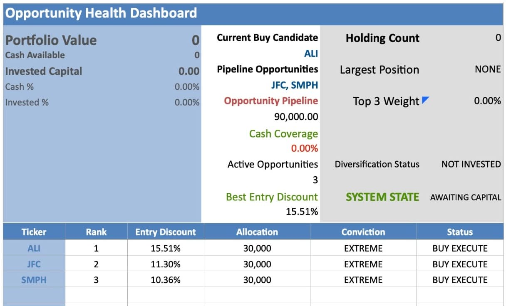
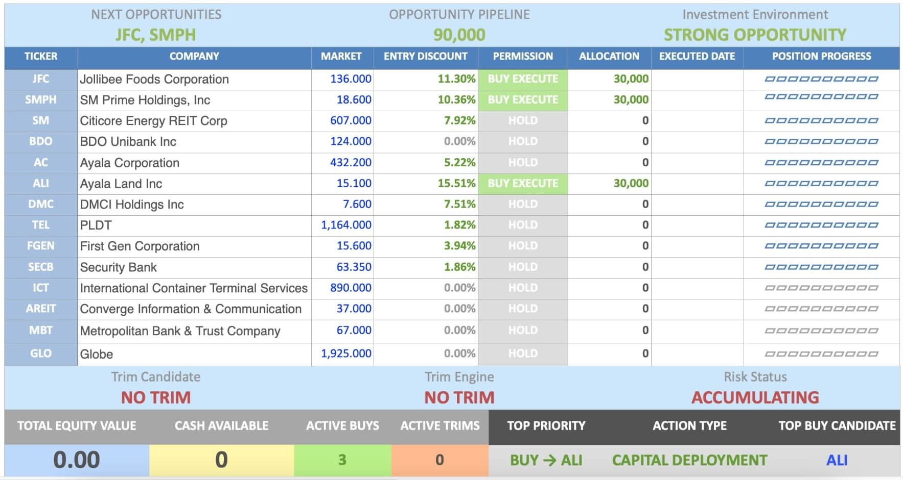
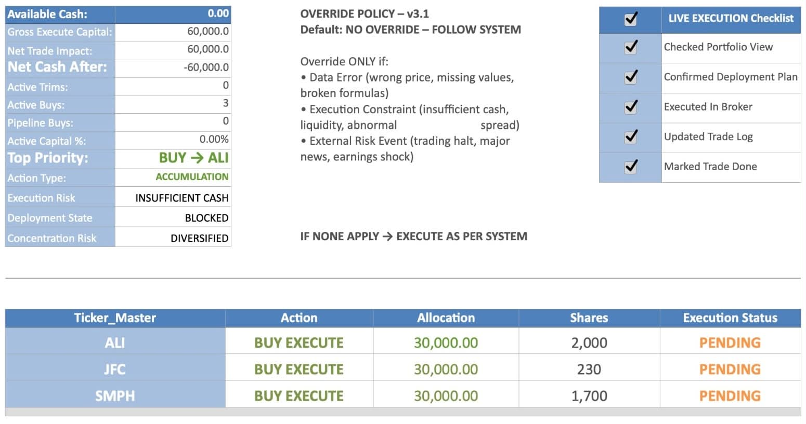
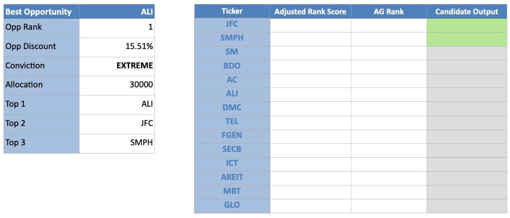
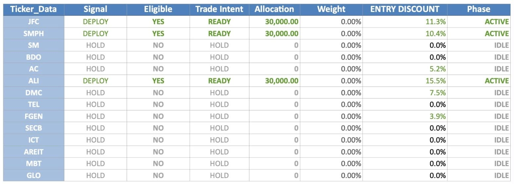

Opportunity Ranking
Identifies higher-priority opportunities within an approved investment universe.
Rules-Based Investment Operating System
Derequito Capital Engine™ is designed to remove emotion from long-term investing through disciplined allocation, structured decision rules, and repeatable portfolio management.
What the Engine Does
The Derequito Capital Engine™ is a rules-based framework for long-term accumulation and portfolio management.
Here, “operating system” means the connected rules, portfolio data, workflows, controls, and reviews used to manage long-term investment decisions. It is not a computer operating system and does not trade automatically.
The Engine is portfolio-driven rather than indicator-heavy. It does not rely on a single technical indicator such as the 200-day moving average. Instead, MA200 forms part of a broader technical-condition framework that also evaluates trend strength, trend confirmation, directional bias, smart entry thresholds, soft-pass conditions, entry triggers, exit triggers, and trim-policy conditions.
These technical conditions are combined with portfolio data such as current holdings, portfolio weights, available cash, target allocations, position size, concentration, execution status, and the approved investment universe. The Engine also monitors portfolio-structure roles, including the liquidity buffer, growth engine, harvest sources, and income stabilizer.
It is not a broker, bank, fund, robo-advisor, or automated trading bot. It does not hold money, connect directly to a bank account, or execute trades automatically.
For example, if an approved holding is below its intended portfolio weight, the Engine reviews available cash, portfolio concentration, position limits, and broad market context before determining whether capital should be deployed. The investor then decides whether to proceed and places the trade through their own broker.
Identifies higher-priority opportunities within an approved investment universe.
Guides deployment decisions using a structured capital planning process.
Helps determine disciplined exposure instead of relying on instinct or emotion.
Monitors portfolio balance, concentration, and long-term structural quality.
Supports consistent risk control through predefined rules and review processes.
Encourages annual company-level review before capital remains permanently committed.
See the Engine
The Derequito Capital Engine™ is currently under controlled development and beta testing. The working spreadsheet is not offered as public download. A US stocks edition is also undergoing controlled burn-in testing before wider use.
The holdings shown are from the founder’s current investment universe. The Engine can be configured around another investor’s existing portfolio or approved list of long-term holdings.


Clean Start Demonstration
Opportunity identification is independent of available cash. The Engine can rank and simulate opportunities before funding, while actual execution remains unavailable until sufficient capital is entered.
SYNTHETIC DEMONSTRATION PORTFOLIO — ILLUSTRATIVE DATA ONLY





Technical Condition Layer
The Derequito Capital Engine™ does not rely on a single technical indicator such as the 200-day moving average. MA200 is only one part of a broader rules-based framework built into the engine.
These conditions are not always displayed in the same form as the familiar indicators shown on brokerage platforms. Instead, the engine translates market-price behavior into practical operating states.
The purpose is not to overwhelm users with charts and indicators. The purpose is to convert market conditions into clear, repeatable decision rules.
Technical conditions are never used in isolation. Final outputs remain subject to valuation, portfolio allocation, position sizing, available cash, buy and trim eligibility, business-thesis controls, portfolio-health rules, and final execution filters.
The engine does not use technical indicators to predict the market. It uses technical conditions to improve decision discipline.
Principles
Why It Exists
Most investors know discipline matters. Fewer have a system that tells them what to buy, how much to allocate, when to rebalance, and when to step back.
The Derequito Capital Engine™ exists to convert investing principles into an operating framework: structured, documented, and continuously improved.
Accumulation Before Premature Profit-Taking
The Engine evaluates whether a holding still qualifies, remains below its intended weight, and continues to serve its long-term portfolio role.
A profitable position may remain an accumulation candidate when current valuation, allocation, and risk conditions still support additional capital.
Gains matter, but they are not treated as automatic exit signals. Trims are generated only when the portfolio’s rules justify them.
A temporary price increase is treated as a reason to realize profit.
A qualified, underweight position may continue toreceive capital untilits portfolio roleis fulfilled.
Public Roadmap
Premium homepage, brand system, visual language, release documentation, and RC2 clarity improvements.
A US equities edition is undergoing controlled burn-in testing to validate formulas, portfolio logic, execution rules, and operating reliability before wider use.
Expanded About, investment philosophy, core principles, roadmap, and frequently asked questions.
Version history, FAQ, changelog, architecture, and user-guide foundation.
Commercial-ready presentation and a deeper explanation of the Engine workflow.
Foundation site released and deployment pipeline verified.
Private Access
The working spreadsheet is not currently offered as a public download. It is intended to become available for purchase in the future through a guided process designed to protect the system and ensure that the appropriate edition is provided.
01
Begin with a private discussion and guided demonstration of the Engine using protected or synthetic portfolio examples.
02
The client’s objectives, current portfolio, platform, and operating requirements are reviewed before delivery.
03
When commercial access becomes available, purchase and guided onboarding will be completed before the working spreadsheet is delivered.
04
The licensed workbook is delivered directly to the approved client and is not intended for redistribution or resale.
Frequently Asked Questions
No. The Derequito Capital Engine™ is not distributed as a public trial. Interested users may request a private demonstration.
The working spreadsheet is delivered directly to the client only after purchase, onboarding, and confirmation of the appropriate edition.
No. Each delivered copy is intended for the licensed client and may not be redistributed, resold, or shared without written permission.
No. The Derequito Capital Engine™ is a rules-based investment framework. It does not hold money, connect directly to bank accounts, or execute trades automatically.
No. The Derequito Capital Engine™ is designed for long-term portfolio accumulation and management. It is not a day-trading system, market-timing service, or short-term trading signal.
No. Investors remain responsible for reviewing every recommendation, making the final decision, and placing trades through their own broker.
The Derequito Capital Engine is portfolio-driven rather than indicator-heavy. It does not rely on a single technical indicator such as the 200-day moving average.
MA200 is only one part of a broader rules-based technical framework. The Engine also evaluates trend strength, trend confirmation, directional trend bias, smart entry thresholds, soft-pass conditions, entry triggers, exit triggers, and trim-policy conditions.
These conditions are not always displayed in the same form as the familiar indicators shown on brokerage platforms. Instead, the Engine translates market-price behavior into practical operating states such as STRONG UP, UP, DOWN, CONFIRMED, WEAK, BUY, WAIT, and TRIM.
Technical conditions are not used alone. Final outputs also remain subject to valuation, portfolio weights, available cash, target allocations, position limits, concentration, execution status, business-thesis controls, portfolio-health rules, and the approved investment universe.
No. The Derequito Capital Engine does not guarantee profits, prevent losses, or ensure that any stock will increase in value.
The Engine is a decision-support framework designed to improve discipline, portfolio allocation, position sizing, risk controls, and execution consistency.
Investment results still depend on market conditions, company performance, the accuracy of user inputs, and the investor’s own decisions.
A new purchase may raise the weighted-average cost when existing shares were bought at much lower prices. The Engine does not attempt to preserve a low historical average. It evaluates whether new capital should be deployed under current portfolio, valuation, allocation, and risk conditions.
When a BUY is generated, the Deployment Plan determines the prescribed allocation. A higher average cost does not erase gains on earlier shares and does not automatically mean that portfolio quality has weakened.
The Engine bases the decision on present conditions, not on protecting a past entry price.
Because a temporary gain does not necessarily mean that the position has completed its long-term portfolio role.
If the holding remains qualified, stays below its intended weight, and continues to meet valuation, allocation, and risk conditions, the Engine may continue to accumulate it.
Profit-taking occurs when the portfolio’s trim rules are met, not simply because the position is currently profitable.
It means the connected rules, portfolio data, workflows, controls, and reviews used to organize long-term investment decisions. It is not a computer operating system.
Public downloadable access is not yet available. The system remains under controlled development, testing, documentation, and validation before wider release.
No. The website explains a personal rules-based investment framework and does not replace independent judgment or professional financial advice.
Built for Long-Term Discipline
This website will evolve alongside the engine: from homepage, to documentation portal, to product platform.